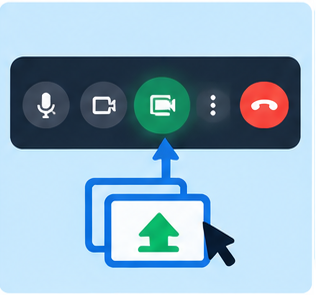

Micrófono
Permite activar o silenciar el audio. Es recomendable silenciarlo cuando no se está hablando para reducir los ruidos.
Cámara
Permite activar o desactivar el video.
Chat
Permite enviar mensajes escritos a los participantes. Puede utilizarse para realizar consultas o compartir información.
Subtítulos
Permiten visualizar en pantalla el texto de lo que se dice, cuando la función está disponible.
Levantar la mano y reacciones
Permiten solicitar la palabra o expresar una reacción sin interrumpir la explicación.
Participantes
Permite consultar quiénes están presentes en la reunión. Según los permisos, el organizador también puede gestionar la participación.
